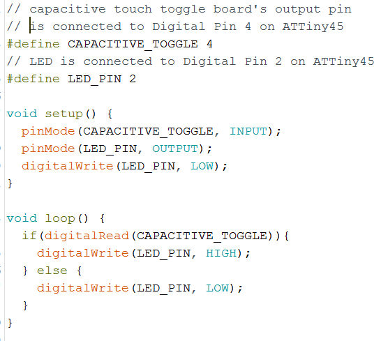
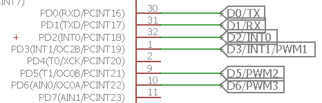
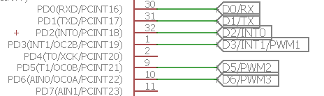

The assignment of this week is to develop a program that reads sensor data using one of the FabLab made microcontroller boards and displays it on the Serial Monitor of the Arduino IDE. I myself wanted to experiment with different kinds of sensors for example, digital sensors, analog sensors and sensors that require other Networking protocols like I2C, SPI, etc.
My FabLab made PCB from week 7 however does not have enough break-out pins in order to use both Software Serial (which is required to read sensor data and display it on the Serial Monitor) and analog sensors. Thus, I used the Hello Board made in week 6 instead. Using this board, I could manage to read data from digital and analog sensors, but not sensors that requires I2C or SPI because these sensors usually need a library in order to communicate with the microcontroller. These libraries are usually written for more complex microcontroller like the ATMEGA328 chip on the Arduino or STM32 on the ESP8266, etc. Thus, in the end I decided to make a "Mini version of the Arduino board" by breaking out the pins that I need in order to read sensor data from all different types of sensors.
The most basic type of digital sensor to use is of course a button, which has been experimented with in previous weeks. I also have a Standalone momentary capacitive touch sensor board from Adafruit which I bought some time ago but have not tested it. It is a very simple-to-use sensor board thus I decided to try it now. The sensor board's OUT pin will output a voltage HIGH when touched once and maintains this state until touched again to give a voltage LOW, thus acts like a toggle switch instead of the ordinary tactile switch without additional programming required. The wiring of the sensor to the Hello board is also very simple. I only need to connect VDD to VCC, GND to GND and OUT to a digital input pin on the board, which in this case is the Digital 4 (D4):
Then I wrote a simple program to use this sensor with the onboard LED:
I uploaded the sketch to the Hello Board using Arduino as ISP and this is how it works in action:

The sensor board also has a builtin LED which is also turned on and off accordingly with the touch, thus, I find the board very convenient for small projects that need capacitive touch input, although a bit expensive.
For the analog sensor, I experimented with the TMP36 Temperature sensor. Like most of the analog sensors, the output of the sensor can be read using the analog input pins of the microcontroller. For example, it can be wired to the Hello Board as followed: +Vs to VCC, GND to GND, Vout to Analog Pin 2 (ADC2).
The sketch to read sensor data, convert it to temperature and display the results look like this:
The value of the reading variable is a number between 0 and 1023, due to the 10-bit ADC on the microcontroller which reads an input voltage to the analog input pin and maps the voltage from 0V-5V to 0-1023 integers. Thus in the sketch we have to again convert this integer to a voltage value and from the voltage value calculate the temperature based on an offset of 400-500mV and the sensor's resolution of 10mV per degree.
After succesfully uploading the sketch to the board using the Arduino as ISP, in order to read the sensor data and print the temperature values on the Serial Monitor, I need to connect the board to the 232R-TTL-to-USB Serial converter:
VCC to 5V or 3.3V (does not matter in this case because there is no external crystal on the board),
GND to GND
Pin D1 to TX (Software Serial's RX, which can be defined in the sketch)
Pin D0 to RX (Software Serial's TX, which can be defined in the sketch)
When I connect the 232R-TTL-to-USB Serial converter to the PC's USB port and in Arduino IDE open the Serial Monitor to that port I am able to read the sensor data as well as the converted temperatures:
And the voltage values read by the sensor are pretty on par with the actual voltage values measured using a multimeter in between the Vout and GND pins:
As mentioned before, I tried to connect the Hello Board with a I2C sensor board, for example the APDS-9960 RGB, Gesture and Proximity sensor board but was not sucessful because many defintions in the APDS-9960 library from Sparkfun are of course not compatible with the ATTiny45 and the compiler could not compile the sketch:
Thus I decided to make another board using the ATMEGA328 in order to have a more versatile board with more IO pins which can be compatible with other sensor libraries.
Below is the schematic of the board I made in Eagle for the ATMEGA328:
For this board I wanted to include the following features:
And this is how the board layout looks like with its dimension:
20.55mm is the distance measured between the 2 mounting holes for an additional 3V coin cell battery holder which I have available, which is of course optional.
I obtained the milling files for the Roland MDX40 using the FabModules CAM Processor like in Week 6 and 7:
And this was the final board, with some signal traces at the bottom thinner than those at the top due to the unlevelled copper sheet:
While testing the traces on the board, I found out the deathly issue that the VCC and GND are connected together(!) After inspecting the board's traces, I recognize a very tiny connection that caused the issue, which can also be seen in the Roland Milling file generated by the CAM Processor. This is probably because 1 of the VCC pads and 1 of the GND traces (highlighted in the images below) are too close to each other and thus was difficult for the CAM processing software to tell them apart.
Thus I simply used a knife to cut the trace and checked again that everything is fine. Then I proceeded to solder components to the board while keeping on checking the connections after every step:
Next, I would like to test the power to the board with a LiPo battery to see if the power-indicating red LED is working fine. However, before doing this, I have to isolate the 2 metal terminals on the coin cell battery holder so that they do not accidentally touch each other and cause a short while there is power provided by LiPo battery or by USB to the power pin headers:
Due to this, I learned that for the next version of the board I will have to include a jumper in order to choose only a single power source to use at a time in order to protect the diferent power sources. Now I can plug in the Lipo battery to test the power-indicating red LED:
I upload the ArduinoISP sketch to the Arduino UNO and then connect the SPI pins (SCK, MISO, MOSI, RST) on the board to the SPI pins on the Arduino UNO (SCK, MISO, MOSI, SS) respectively. At this point, I realize that I actually forgot to break out the RESET pin on my board(!). Thus, I have to use manual connection with a jumper cable between the UNO's SS pin and the board's RST pin (on the button):
In order to burn bootloader to this board which uses the 8MHz internal clock, I have to download the ATMEGA328 on a breadboard Board definition ZIP file, extract it and copy the breadboard folder to the hardware folder of Arduino. More detailed instructions are available in the Arduino To Breadboard: Minimal Circuit tutorial on the Arduino Website.

In the Arduino IDE, under Tools I have to choose ATMEGA328 on a breadboard (8 MHz internal clock) as the board and Arduino as ISP as programmer, select the correct Port and then click on Burn bootloader.
When bootloader is burnt successfully (only that it does not always happen from the very first trial, more to be discussed in Section 4: Problems and Troubleshooting), I can disconnect the board from the Arduino UNO and connect the VCC, GND, TX, RX pins on the board to the 3V3, GND, RX, TX pins on the TTL-to-USB Serial converter correspondingly to program the board.
Now in the Tools menu I only have to change the Programmer back to AVRISP mkII, then I can upload the example Blink sketch to the board as usual:
The sketch can be uploaded as usual with the shortcut Upload button, unlike when programming using Arduino as ISP where we have to select Upload using programmer. However, another thing to note is we have to press the RESET button while uploading so that the bootloader on the board can tell the microcontroller to run the newly uploaded program.
And it works, after much troubleshooting:

Now I can finally continue with where I left off with the sensors in Section 1. I opened the example sketch Proximity sensor from the downloaded APDS-9960 library from Sparkfun:
For wiring, I have to connect the sensor board to the ATMEGA328 Board following this schema:
APDS9960 sensor board's pin ----- ATMEGA328 Board's pin
SDA ----------------------------- ADC4/SDA
SCL ----------------------------- ADC5/SCL
GND ----------------------------- GND
INT ----------------------------- D2/INT0
VCC ----------------------------- VCC
After uploading the sketch to the board, I could read the sensor data:
I noticed that the sensor values range from 5 to 255 where 255 is the maximum value read when an object is closer to the sensor and 5 is when the object is farther away. The smallest distance that the object has to be from the sensor in order to be detected is around 10cm, and the maximum distance that the sensor can detect is around 30cm.
Using SPI interface, we can even use this Mini Arduino board to program another board, for example the Hello Board, or even another (improved) copy of this board (#todo). Or we can also use it to communicate with other input devices that use this interface. For example, the MIFARE RC552 RFID reader is one. First, I download the library for the module here, unzip it and open the example sketch called ReadNIUD.ino

In the sketch I have to modify the pin numbers for the SS and RST pins accordingly:
Then I connect the RFID reader module to my board following this wiring scheme:
RFID reader module's pin ------ Board's pin
SDA --------------------------- D10/SS
SCK --------------------------- D13/SCK
MOSI -------------------------- D11/MOSI
MISO -------------------------- D12/MISO
GND --------------------------- GND
RST --------------------------- D9
3V3 --------------------------- VCC
I also modified the sketch a little so that it will read and display the card ID every time, instead of the original sketch where the ID of a card that has already been read before will not be displayed again. After uploading the sketch to the board, I got the following results for 2 different tags on the Serial Monitor:
The card reader was also able to read the NUID of a NFC-enabled smartphone device.
There was of course a lot of problems this week, mostly during the designing, bootloading and programming the ATMEGA328 board. Besides the issues that have already been discussed in previous sections, one of the other problems was bootloading the ATMEGA328. The compiler gave me this error while burning bootloader:
While looking around on the Internet for a solution, I found out that one reason could be because the ATMEGA328 might somehow have been configured by factory settings to work with external 16MHz crystal, meaning I will not be able to do anything to it (bootloading, programming) unless I connect a 16MHz crystal first, and then I can reconfigure it to use the internal 8MHz crystal instead. Hoping that this is my lifeline, I followed the Arduino To Breadboard tutorial on the Arduino Website and connected an external 16MHz crystal over some capacitors (we need 2x22pF capacitors which I could not find so I had to use 6x68pF capacitors instead - putting 3x68pF caps in eries will give around 1x23pF) to the XTAL1 and XTAL2 pins (D14 and D15 on my board, which I have luckily broken them out), and of course I have to provide 5V across VCC and GND pins:
Then I tried to burn bootloader again with the following settings:
And it worked like a charm! Phew! Now I can change the settings again to use the internal 8MHz clock as described in Section 2 and it was also successful. Then I can finally move on to programming the board. But...
...again it was also not smooth from the beginning. For some reason while designing the board's schematic, I made a mistake in labelling the TX and RX nets. I swapped their names over:
 As a result, while trying to upload the Blink sketch to the board over the TTL-to-USB Serial converter, I got the following error:
After re-checking my schematic and figured out the error, I swapped the TX and RX connections and finally I was able to upload the sketch to the board.